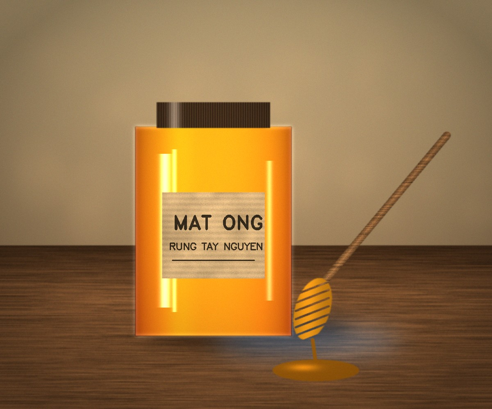

300.000đ / lít
Mật ong khai thác theo mùa hoa cà phê và hoa rừng Tây Nguyên, lọc thủ công, không pha đường. Màu vàng sậm, vị ngọt thanh, thơm.
| Xuất xứ | Đắk Nông, Đắk Lắk |
|---|---|
| Loại | Mật ong hoa rừng nguyên chất |
| Quy cách | Chai 500ml, 1 lít |
| Hạn sử dụng | 24 tháng |
| Bảo quản | Nơi thoáng mát, đậy kín nắp |